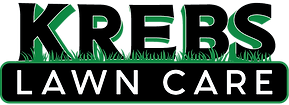

Mowing
Routine lawn mowing for homes that need consistent seasonal upkeep.

Affordable mowing, mulch application, hedge trimming, and brush hauling from a small local business owned and operated by Alexander Krebs.
Krebs Lawn Care, LLC serves Fort Scott and nearby 66701 homeowners who want a reliable hand keeping the yard neat through the growing season.
The updated layout keeps the simple local feel of the original page, then makes services, contact details, and next steps easier to find from the first screen.
Service area: Fort Scott, Kansas and nearby neighborhoods.
Routine lawn mowing for homes that need consistent seasonal upkeep.
Fresh mulch for beds, curb appeal, and cleaner property edges.
Clean shaping for shrubs and hedges before they overgrow walkways.
Help clearing and hauling yard debris after trimming or cleanup work.
Share the Fort Scott area property location and the service you need.
Mowing frequency, mulch timing, hedge size, or brush pile details help scope the job.
Phone and email are repeated so homeowners do not have to hunt for contact info.
Call or email Krebs Lawn Care, LLC for affordable lawn care service in Fort Scott, Kansas.